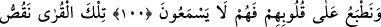

GEÇMİŞ ÜMMETLER
VE ALINACAK İBRETLER
94. Biz hangi ülkeye bir peygamber gönderdiysek, ora halkını, (peygambere baş
kaldırdıklarından ötürü bize) yalvarıp yakarsınlar diye mutlaka yoksulluk ve
darlıkla sıkmışızdır.
95. Sonra kötülüğü (darlığı) değiştirip yerine iyilik (bolluk) getirdik. Nihayet
çoğaldılar ve: “Atalarımız da böyle sıkıntı ve sevinç yaşamışlardı” dediler. Biz de
onları, kendileri farkına varmadan ansızın yakaladık.
96. O (peygamberlerin gönderildiği) ülkelerin halkı inansalar ve (günahtan)
sakınsalardı, elbette onların üstüne gökten ve yerden nice bereket kapıları
açardık, fakat yalanladılar, biz de ettikleri yüzünden onları yakalayıverdik.
97. Yoksa o ülkelerin halkı geceleyin uyurlarken kendilerine azabımızın
gelmeyeceğinden emin mi oldular?
98. Ya da o ülkelerin halkı kuşluk vakti eğlenirlerken kendilerine azabımızın
gelmeyeceğinden emin mi oldular?
99. Allah’ın azabından emin mi oldular? Fakat ziyana uğrayan topluluktan
başkası, Allah’ın (böyle) mühlet vermesinden emin olamaz.